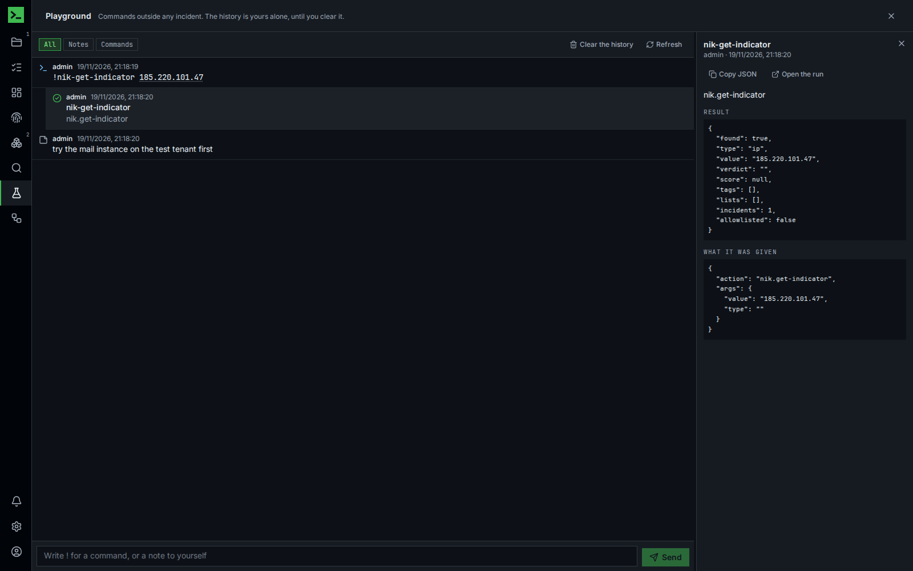

Automation
A playbook is a drawing of what to do when something happens: nodes joined by lines, started by an event, a schedule or a person. Nik runs it step by step, asks a person where you said it should, and keeps what every step got and gave. This page is the whole of it: the canvas, each kind of node, expressions, approvals, runs, scripts, and what a playbook may reach and send.
The words
| Playbook | A graph: one trigger, then nodes joined by edges. It has a name, limits, and two choices that belong to an admin: the hosts it may reach and the classes of data it may send. |
| Draft and version | The canvas edits a draft, which saves itself and may be anything. Save as version has the server check the draft; when nothing is wrong it becomes the next version, and that is what runs from then on. Versions are never rewritten: restoring an old one saves it again as a new one. |
| Run | One execution of a version. It is kept in the database step by step, so a restart of the server loses nothing: the run goes on from where it was. |
| Step | One node taken by one run (once per item inside a "for each"). A step keeps what went in, what came out, what was sent, its tries and its log. |
| Script | A piece of Python with named arguments and outputs, written once and used as a node in any playbook. |
Who may do what
| To… | You need |
|---|---|
| See playbooks and runs, run a playbook by hand, stop a run, answer an approval | Analyst, Playbooks or Admin |
| Type a command in the War Room, press a script button of an incident page | Analyst or Admin: running, and reading the incident it runs on (Playbooks alone runs and reads no incident) |
| Create and change playbooks and scripts, turn a playbook on or off, change its limits | Playbooks or Admin |
| Choose the hosts a playbook may reach, let it reach any host, open a class of data, stop all automation | Admin |
A Viewer does not see the Automations area. What a playbook changes in Nik is signed
nik-automation, an account that cannot sign in, and written to the audit log with the run and with
whoever approved the step.
The canvas
Open Automations on the rail (or /automation/playbooks), create a playbook or open
one. The screen has three parts:
- The library, on the left, in three tabs: Commands (what Nik does and what each connector does, one group for each, closed until you open it), Scripts and Flow (condition, for each, wait, approval, task, question, another playbook, end). The search looks in all three at once. A connector is there only while one of its instances is on. Drag a node onto the canvas, or click it: it lands after the selected node, joined to it when that node's line is free. A node marked changes does something outside Nik and asks for approval by default. Above the tabs are the playbooks and their branches.
- The playbook, in the middle. Drag from the square under a node to another node to draw an edge; a condition has two squares (yes, no), an approval two (approved, refused), and the nodes that can fail have one on their right side for the on error line. Tidy up puts the nodes in order; the minimap and the zoom buttons are in the corners. A connection under the pointer (or selected) shows an × that removes it, and small squares to route it by hand: drag the hollow one in the middle of a straight part and it becomes a corner; drag a corner to move it (the arrow keys move it too); double-click it, or press Delete on it, to take it away. A connection has twenty corners at most; with none it draws itself again. The corners are saved with the playbook, so everybody sees the same drawing.
- The inspector, on the right: the settings of the selected node, where it goes next, what it gives to the nodes after it, and what is still to fix. With no node selected it shows the playbook itself: its inputs and outputs.
Every change is saved a moment after it is made (draft saved). Save as version sends the draft to the server, which checks it: one trigger, no circle, every required argument filled, every expression reading something that is certain to have run before it. What is wrong is shown on the nodes (2 to fix) and, in words, in the inspector. Undo and redo are Ctrl+Z and Ctrl+Shift+Z; Ctrl+C and Ctrl+V copy and paste the selected nodes with the edges between them.
Without a pointer. Tab moves through the nodes, Enter selects one, the arrow keys move it, Delete removes it. Edges are drawn in the inspector, under Goes to: choose the node an edge leads to, port by port. Node list shows the same playbook as a table: each node, where it goes, what is to fix.
A playbook also has Runs (its own runs), Versions (restore an older one) and Settings (its name, limits, network and data, export, delete). The switch in its header turns it on: a playbook that is off is started by nothing but a person.
Throwing away and deleting. A playbook that has a version and a draft shows discard the draft under its name: the canvas goes back to the version in use (it asks first; a draft thrown away is not kept anywhere). The right-click menu of a playbook and of a script in their lists ends with Delete…: a playbook goes with its versions, its branches and its runs, and is not deleted while a run is in progress; a script a playbook uses is not deleted, and the answer says which playbook.
Branches
A branch is a copy of a playbook's graph to work on beside it: a change that takes days, an experiment, something a colleague should look at before it runs. Nothing a run uses changes while a branch is edited.
-
Where they are. The top of the side panel lists the playbooks; each opens into
main (the version in use, with its draft) and its branches, each with the name of who made it. A
click goes there. The list of playbooks shows the branches under each playbook as well. A branch has an
address of its own,
/automation/playbooks/<id>/branches/<branch>, to send to somebody. - Making one. New branch copies what is on the canvas: main with its draft, or the branch that is open. A name is asked; main and draft are taken. A playbook has twenty branches at most.
- Working on it. A branch saves itself a moment after each change, like the draft (Save branch saves it at once), and need not be valid. Everybody who edits playbooks sees every branch; only who made it, or an admin, changes it. Somebody else's opens read-only: make a branch of your own from it.
- A branch runs only in the debugger. On a branch the editor has no Run… and no switch, and the trigger drawn on it starts nothing: no event, no schedule, no request from outside, no other playbook and no run by hand ever uses the graph of a branch. The server refuses it too, whoever asks. Debug… is how a branch is tried: it starts a debug run of the branch as it is saved (what is on the canvas is saved first), which holds what goes outside as every debug run does. Who edits playbooks debugs any branch. The run says which branch it was, on its page and in the list of the debug runs, and goes on with the graph it started with when the branch is changed meanwhile.
-
Compare with main. Before a push, Compare with main (in the editor of the branch,
and in the dialog of the push) puts main as it is now on the left and the branch on the right: two read-only
canvases that pan and zoom together. A node is added (in the branch only, marked
+, solid border), removed (in main only,-, dashed border) or changed (the same id with another kind, name or configuration,~, dotted border), so that no change is told by its colour alone. A node that only sits somewhere else on the canvas is not a change, and is counted apart. The counts are at the top (+2 added · ~1 changed · -1 removed · 1 line moved) and every change is listed on the right, with the lines that were drawn, taken away or moved to another node; a line that came or went with its node is not listed again. Choose a node, on either canvas or in the list, to see what changed in it field by field: what it was after-, what it is after+, down to each key of its configuration (a script version pinned on the node is one of them). When main got a version since the branch was made, a line says that the left side is main as it is now. Push to main… is on the page. - Push to main. The branch is checked like a draft saved as a version and becomes the next version of the playbook, the one that runs from then on; the note you give is kept with the version. The branch stays, to go on from, and the draft of main is not touched. Graphs are not merged: when the playbook got a newer version since the branch started (the header says started from version N, the list behind), the push stops and says so, and Push over it replaces what was saved since. Nothing is lost: the earlier versions are under Versions, to restore.
- What stays on main. Running by hand, the switch, the triggers and the schedule are those of the version in use: open main for them. The runs, the versions and the settings shown on a branch are the playbook's. To run a branch for real, push it, or copy it to a playbook of its own with export and import.
The nodes
Trigger
Every playbook has exactly one. It can start the playbook in four ways, alone or together:
-
On an event of Nik (the table below). The run works on what the event is about: an incident,
an analysed e-mail, file or address, an indicator. Only when the event matches adds comparisons, the
same as a condition node:
{{ trigger.mail.verdict }}equalsphishing. -
On a schedule: five fields as in cron (
0 8 * * 1-5is 08:00 from Monday to Friday), in the time zone you name (UTC when empty). A schedule cannot fire more often than every five minutes. A firing that finds the run of the last one still going is skipped; times missed while the server was down are not made up for one by one (the schedule fires once when it is back). - From outside: a request another system sends to the playbook's own address. See Starting a playbook from outside.
- By hand: Run a playbook… in the right-click menu of an incident, of an analysed e-mail, file or address, and of an indicator; on an incident's Automation tab; on an artifact's page; or Run… on the playbook's page, which runs that playbook and asks only the incident: type a part of its title or its number, and choose among the ten suggested. A playbook whose event is about one kind of object is offered on that kind only (one that waits for e-mails is not offered on a file); a playbook with no event is offered everywhere, and reads whatever it was run on.
| Event | When | What {{ trigger.… }} holds |
|---|---|---|
incident.createdincident.updated |
An incident is created; one of its fields changes. |
incident.id, .url, .name, .ticket,
.status, .severity, .assignee, .host,
.username, .os, .created, .modified; for
incident.updated also changed, the list of fields that changed.
|
mail.analysed |
An e-mail is analysed: uploaded on its own or in an incident, analysed again, or imported from a mailbox. |
mail.sha256, .subject, .sender, .sender_domain,
.sender_sha256, .verdict (phishing, suspicious,
clean), .score, .urls (where its links lead),
.attachments (each with name, sha256, size),
.artifact_id, .url; from_mailbox (the mailbox's id, or empty);
the incident.… fields when it was analysed in one.
|
file.analysed |
The analysis of a file ends: uploaded, taken out of an e-mail or a capture, or analysed again. |
file.sha256, .name, .size, .type,
.verdict (high, medium or empty), .yara (the names
of the rules that matched), .artifact_id, .url; the
incident.… fields when it was analysed in one.
|
url.analysed |
The scan of an address ends. |
scan.id, .url, .final_url, .host,
.verdict, .score, .artifact_id, .page (its address
in Nik).
|
ioc.verdict_changed |
What the sources say of an indicator, taken together, changes (a first answer that says nothing is not a change). |
ioc.kind, .value, .old, .new, .sources,
.score, .tlp, .tags, .lists,
.incidents, .private, .allowlisted.
|
ioc.watch_hit |
An incident comes to hold an indicator of a watched list. The run works on the incident. |
ioc.… and list.id, list.name of the first hit; hits,
every hit (each with type, value, list, incident);
the incident.… fields.
|
sla.breached |
A timer of an incident passed the time its type allows. Said once for each timer. |
timer.field, .label, .due_minutes, .elapsed_minutes;
the incident.… fields.
|
storage.low |
The disk that holds the evidence has less than a tenth free. Said once a day while it stays so. |
disk.total, .used, .free (bytes), .free_percent.
|
artifact.expiring · artifact.expired |
An artifact someone gave a date to is seven days from being deleted (said once) · it was deleted because its day came. |
artifact.id, .kind, .name, .ref, .size,
.expires_at, .days_left, .url.
|
The other ways to start give:
| Started by | Fields |
|---|---|
| A person |
actor (who started it) and the fields of what it was run on: incident.…,
mail.…, file.…, scan.… or ioc.…, as in the table
above.
|
| A schedule | at (when it fired) and cron. |
| A request from outside |
body (an object when the request is JSON, text otherwise), headers (content
type, user agent and the sender's own X- headers), query.
|
A change a playbook makes can start other playbooks, three deep at most: beyond that the event is dropped, so two playbooks cannot keep waking each other. An import of a large mailbox writes one event for each new message: the runs an hour of the playbook are what bounds it.
The same events can be sent to an address of yours as signed webhooks (API → Webhooks): that is Nik telling another system, with no playbook involved.
Starting a playbook from outside
Turn on From outside in the trigger, save a version, then open the playbook's Settings and choose Create the address. Nik shows a URL that ends with a long random token:
POST https://nik.example.org/api/automation/hooks/<token>
Content-Type: application/json
{"alert": "beacon", "host": "WKS-12"}- The address is the credential. Whoever has it can start the playbook, with no account and no API key; a session cookie or a key sent along is not read. Nik shows it once and keeps only its SHA-256: an address that was lost is replaced, not read again. Replace the address and Remove the address stop the old one at once.
-
What the playbook reads.
{{ trigger.body }},{{ trigger.query }}and{{ trigger.headers }}. Of the headers only the content type, the user agent and the sender's ownX-headers are kept; anything that looks like a credential, a signature or what a proxy added is dropped. - Limits. 256 kB a request, 60 requests a minute for each address, and the playbook's own runs an hour. Nothing that arrives has a class of its own: what the playbook may send on is decided by the same guard as everything else.
-
Answers.
202 {"accepted": true}when the run started;404for an address that does not exist, a playbook that is off or whose trigger does not start from outside, and while automation is stopped (one answer for all, so that it says nothing of what exists);413for a body too large;400for JSON that cannot be read;429beyond the limits. The answer never says what the playbook did. - The address must be reachable by the sender: it is under the same origin as the rest of Nik, behind the same reverse proxy.
Condition
All of or any of a list of comparisons; the run leaves by yes or by no. Each comparison has a left side (usually an expression), an operator and, for most, a right side.
| Operator | Holds when |
|---|---|
| is · is not | The two are equal. Text is compared without regard to case; "82" is 82. |
| is more than · at least · less than · at most | As numbers when both read as numbers, as text otherwise. |
| contains | A text holds the other text, or a list holds an item equal to it. |
| is one of | The left side equals one of the values on the right (separated by commas, or a list). |
| matches the pattern | A regular expression of 500 characters at most, searched in the text. A pattern that takes too long is stopped and counts as not matching. |
| is there · is empty | The value exists and is not null · it is missing, null, an empty text, list or object. |
For each
Does the same steps for every item of a list: what leaves its for each item square is the body, done
once per item, five items at a time; the run goes on from when done. Inside the body
{{ item }} is the item and {{ index }} its position from 0. After the loop the node
gives count, failed and results (what the body's last step gave for each
item, in order). A list longer than At most (500 is the ceiling) is cut. With
Go on with the other items when one fails a failing item is counted and the loop continues; without it
the loop fails.
A "for each" cannot hold another "for each" (run another playbook from the body instead) or an approval (ask
once, before the loop). A step of the body cannot be read after the loop: read the loop's
results.
Wait
For a time, between one minute and thirty days, or until a condition holds, looked at again
every so often, up to a limit; then the run goes on and the node's timed_out says whether the
condition never held. A waiting run holds no worker: it is a row in the database with a time on it.
Approval
Stops and asks a person the question you write, with a detail under it; the run leaves by approved or refused. It waits without limit unless you set a time; when the time ends the run goes on as refused, or stops, as you choose. An approval nobody answered is never taken as given. See Approvals.
Task
Gives a person something to do and waits until it is done. A task has a title,
instructions (Markdown), and is for a user, for whoever holds a role, or for the owner of the
incident: whoever has the incident at the moment the task is done, so a task follows the incident when it
changes hands. It can ask for fields of the incident to be filled: what is typed is checked as the
field says and written to the incident. The run leaves by when done and the steps after read
{{ node.by }}, {{ node.comment }} and {{ node.fields.name }}.
With a due time (30m, 2h, 3d, a number of seconds, or an
expression that gives one of them or a date) the task becomes overdue when the time passes, and
stays to do: the run also leaves by when overdue, if an edge is drawn there, and still
leaves by when done when the task is completed. A reminder tells who it is for again at its
interval. A task that is skipped lets the run go on by when done with
{{ node.skipped }} saying why.
Question
Asks a person to choose, or to fill a small form, and goes on by the answer. A question is for a user, a role,
the owner of the incident, or anyone who works incidents. Each choice (six at most) is a port
of the node, so a different edge leaves it for each answer; with no choice the node leaves by answered.
It can ask for values (text, a number, yes or no) that the steps after read as
{{ node.values.name }}, and for fields of the incident, written to it as for a task.
{{ node.choice }} is the choice made. With a time to wait, a question nobody answered is given up
and the run leaves by no answer. The approval is the question whose answer
is yes or no, and stays what gates a change outside Nik.
Any node but the trigger can name a phase (Triage, Containment…): the work plan of an incident lists the steps of a playbook under its phases, in the order the playbook reaches them. The plan shows a node by its name and its kind, never by what it is given, so whoever reads the incident can read it.
A run that waits for a task or a question is waiting, and that time does not count against the longest run of the playbook. When the run ends for another reason, what was still asked is skipped. A dry run asks nobody: it takes when done, or the first choice. A task or a question cannot be inside a "for each".
Run another playbook
Starts another playbook at its current version, with the inputs you give it, and (unless you turn
Wait for it to finish off) waits and reads its outputs as {{ node.result.… }}. Playbooks
may call each other five deep; a circle is refused when the version is saved. The inputs a playbook takes and
the outputs it gives back are set on the canvas with no node selected.
End
Ends the run here, as done or as failed, with a message shown on the run. A run also ends, done, when no step is left to take.
What a playbook does in Nik
| Node | Takes | Gives |
|---|---|---|
| Get an incident | incident (its id; the run's incident when empty) |
incident: id, name, status, severity, assignee, url |
| Add a note | incident, text |
note, its id. The note is marked automation and opens the run. |
| Set the status | incident, status: open, in_progress, closed |
incident |
| Assign the incident | incident, assignee (empty takes it from whoever has it) |
incident |
| Set a field of the incident |
incident, field (ticketId, title, host, username, os, severity, status,
assignee), value
|
incident |
| Create an incident |
title, ticketId, host, username,
severity
|
incident |
| Add indicators |
indicators (a list of values, of {type, value} objects, or a text that holds
them), tags, note
|
added, known |
| Tag indicators | indicators, tags |
tagged |
| Add to a list · Remove from a list | list (the name of a watch list; made if there is none), indicators |
added · removed |
| Get the lists | watched (only the watched ones) |
lists (each with id, name, description,
watched, tlp, count), names, count
|
| Check a list again |
list, force (ask also about what was checked lately; on by default),
wait_minutes (120)
|
before and after (the indicators with their verdict, as they were and as they
are, for the script VerdictChanges), total, asked,
finished, check. The step waits for the sources without holding a worker, and
goes on with what is there when the time is up.
|
| Get an indicator | value, type (guessed when empty) |
found, verdict, score, tags, lists,
incidents, allowlisted
|
| Link an artifact |
artifact (file-…, mail-…, url-…),
incident
|
linked |
| Start a timer · Pause a timer · Stop a timer |
timer (time_to_assign, time_to_contain,
time_to_close, or a timer field of your own), incident; to start:
minutes allowed, business_hours, restart
|
state, elapsed_minutes, due_minutes, breached |
Lists. A list is what a playbook reads by a name: the VIP users, the hosts that are yours, the
addresses a campaign used. Lists are made and filled in Settings → Lists; what Nik used to keep in its
settings (the IoC allowlist, your domains, the suspicious keywords, the business hours, the hosts every playbook
may reach) is there too, and so are the watch lists of the Indicators page, read like the others.
Read a list gives its items (values, an object of key → value, or a document) and their
count; Is it in a list? gives found; Add to a list,
Remove from a list and Set a list change one, and only a list that says
Playbooks may write to this list: every other is refused. An item can be added for a time
(expires_minutes) and is dropped when it is over. In an expression,
{{ trigger.mail.sender_domain | in_list('internal_domains') }} is true or false; a list of networks
holds the addresses inside them, and a list of values is compared without regard to case. A trigger's condition
can use it too.
SLA timers. A timer counts how long an incident has taken: to be assigned, to be contained, to
be closed. The type of an incident says which timers its incidents have and the minutes each is allowed (Settings → Incidents → SLA), by severity if you want, and whether only business hours count. A timer the type switches on starts with the
incident; time to assign stops when the incident has an owner, time to close when it is closed
(and goes on if it is opened again), time to contain when a playbook or a person stops it. A timer past
its time is breached, once: the incident is marked ({{ incident.sla_breached }}), its War
Room says so, its owner is told, and sla.breached starts the playbooks that wait for it. The worker
looks every minute.
HTTP request
Sends a request to an address the playbook may reach and reads the answer:
method (GET, POST, PUT, PATCH, DELETE), url, headers, query,
a json body or a body as text, timeout (60 seconds; 300 at most) and
fail_on_error (an answer of 400 or more is a failure, unless you turn it off). It gives
status, ok, json (when the answer is JSON) and text. An
answer larger than 5 MB is refused; three redirects are followed, each checked like the first address. Anything
but a GET changes something on the other side, and asks first by default.
Mail is a connector since 5.1, not a node of its own: Mail listener / sender. Its commands are in the library once one of its instances is on: send, reply, forward, search, get-message, move, mark-read, mark-unread, delete, list-folders.
The node Send an e-mail of 4.x is kept in the playbooks that have it and is not offered for new ones. It sends through an instance of the Mail connector: the one it names, or the only one that is on. The SMTP server that was set in Network and data became such an instance when the server was updated.
Expressions
Every text field of a node takes values from the run with {{ }}. Type them, or use
Pick a value (the { } button beside the field), which lists what this node can
read and writes the expression where the caret is. The list goes into what a block gives: after
get_message. it offers from, subject, attachments[*].name
and the rest, taken from the outputs the command declares and, for a command of a connector, from the
sample answer in its file.
{{ trigger.incident.name }}
{{ search.recipients[*].office | unique | join(", ") }}
{{ args.urgency | default("3") }}
Phishing: {{ trigger.incident.name }} ({{ lookup.score }})-
An expression is a path and, after
|, filters. It can also compare, count and choose (Deciding and counting, below). There is still no code: a name is a path into the data or one of four functions, and nothing else can be called. What takes several steps or a loop belongs to condition nodes and to scripts. -
A path starts with a name:
trigger, the id of a node (shown in the inspector, and changed there: the expressions that read it follow),itemandindexinside a "for each",inputs(what the playbook was given),run(id,url,playbook,started_at,dry_run), and for a run that works on an incidentincidentandcontext(The incident and its context). -
Then
.name,[0]([-1]is the last),["a key"], or[*]: every item of a list, sorecipients[*].officeis the list of offices. - A field that is exactly one expression keeps the type of what it names (a number stays a number, a list a list). Mixed with text it becomes text; a list or an object is then written as JSON.
-
A path that leads nowhere fails the step, unless
| default(…)follows it, or it is given tofirst_of(…)or asked byif(…). That is on purpose: a ticket opened with an empty title is worse than a run that stops and says why. - A node reads only what is certain to have run before it: the trigger and the nodes every path to it passes through. After a condition, the nodes of one branch cannot be read where the branches meet: the other branch may have been taken.
| Filter | Gives |
|---|---|
default("x") · default(other.path) |
The value, or x when it is missing or null. What a filter is given may be a text, a number
or another expression: here, another path to read instead.
|
length |
How many items a list has, characters a text has, keys an object has. |
first · last · unique · sort |
Of a list. |
join(", ") · split(",") |
A list as one text · a text as a list (parts trimmed, empty ones dropped). |
pluck("name") |
The name of every item of a list. |
where("vip") · where("size", "gt", 100) |
The items whose field is set · whose field compares so (the operators of a condition:
eq, ne, gt, gte, lt, lte,
contains, in, exists, empty).
|
get("a.b") · keys · values |
A field of an object by its path (null when absent) · its keys · its values. |
lower · upper · trim · replace("a", "b") |
Of a text. |
map(high="1", low="3", else="2"), or pairs for values that are not names:
map("1", "open", "2", "closed")
|
Another value for each value named; else for the rest (the value itself when left out).
|
int · float · bool |
The value as a number or as true/false ("no", "0", "off" are
false).
|
json |
The value written as JSON. |
date · date("%d/%m/%Y") |
An ISO date, or seconds since 1970, as text in UTC (2026-11-17 08:30 by default). |
severity · severity("inverse") |
A severity of another product as Nik's (low, medium, high,
critical): a word (Moderate, Severe…), a number from 1 to 5 where
5 is the worst ("inverse" when 1 is the worst, as a priority is), or a score from 0 to 100,
cut at 25, 50 and 75. Empty for what is none of them.
|
urlencode · base64url |
A text as it is written inside an address: everything but letters, digits and
-._~ percent-encoded, so that a value put in a path or a query cannot change either (/hosts/{{ args.name | urlencode }}) · the text in base64 as an address takes it, without padding: how some APIs name a URL.
|
regex_extract("INC[0-9]+") · regex_extract("user=(\w+)", 1) |
The part of a text a pattern finds, or one group of it by number or by name; empty when it finds none. The pattern is matched with a time limit. |
defang |
hxxp[://]evil[.]example: an address made safe to paste in a message. On a list, each item.
|
Deciding and counting
Since 6.5 an expression can do what a verdict or a summary needs: compare, count, choose between two values, and tell how far apart two dates are. It reads as it is written:
{{ if(response.stats.malicious >= 3, "malicious", "unknown") }}
{{ response.stats.malicious }}/{{ response.stats | values | sum }} engines flag it
confidence {{ response.score }} %, {{ response.reports | plural("report") }} in 90 days
{{ first_of(response.malware, response.threat_type, "known IOC") }}
{{ response.tags | has_any(["malware", "c2", "botnet"]) }}
{{ now.iso | date_diff(response.registered, "days") < 30 }}| Written | Gives |
|---|---|
== · != · < · <= · > ·
>=
|
True or false, compared as a condition node compares: texts regardless of case, a number written as a
text as that number ("12" > 9), an empty text equal to null. One comparison at a time:
a < b and b < c, not a < b < c.
|
and · or · not |
a or b is a when it counts as yes, b otherwise;
a and b is a when it counts as no. The side that does not decide is not read.
Nothing counts as yes but what is neither null, false, zero nor empty (a text, a list, an object).
|
x in [...] · x not in [...] |
Whether a value is an item of a list (verdict in ["malware", "c2"]), a part of a text
(":" in args.ip) or a key of an object. A list is written between brackets, and its items
may be paths.
|
+ · - · * · / · ( ) |
The four operations, on numbers only: a number that came as a text goes through
| int or | float first. A result that is whole is a whole number (6 / 3
is 2, 7 / 2 is 3.5). Dividing by zero and a result beyond 1015
fail the step.
|
a ~ b |
The two values written one after the other, as text: ", " ~ count ~ " suspicious". |
if(condition, then, otherwise) |
then when the condition counts as yes, otherwise when not (null when
otherwise is left out). Only the value that is chosen is read, and a condition that is a
path leading nowhere counts as no. One inside another gives a verdict in three steps:
if(m >= 3, "malicious", if(m or s, "suspicious", "unknown")).
|
first_of(a, b, "x") |
The first of the values that is not missing, null or empty; null when all are. Unlike
default, it takes any number of paths and skips an empty text.
|
min(a, b) · max(a, b) |
The smallest and the largest of several numbers, or of one list. |
A filter applies to the value just before it, before any operator: a + b | round rounds
b alone, (a + b) | round rounds the sum; and items | length > 3 compares
the length. Every new form is written between the same {{ }}, so nothing changes in a YAML file: an
expression is quoted as it always was (verdict: "{{ if(response.score >= 75, 'malicious', 'unknown') }}").
| Filter | Gives |
|---|---|
round · round(2) · abs |
A number to so many decimals, a half away from zero (2.5 is 3) · without its sign. |
sum · min · max |
Of a list of numbers: stats | values | sum. The smallest and largest of an empty list are
null.
|
percent(total) · percent(total, 1) |
The number as a percentage of a total, rounded (0 when the total is 0). |
count · count("vip") · count("status", "gte", 400) |
How many items a list has · how many whose field is set · how many whose field compares so, with the
operators of where.
|
plural("report") · plural("entry", "entries") |
A count with its noun: 1 report, 2 reports, 0 entries. A list
counts as its length.
|
has_any([...]) · has_all([...]) · intersect([...]) ·
without([...]) · union([...])
|
Whether a list has one of these values · all of them · its items that are among them · its items that are not · its items and then those of the other list it does not have. Texts are compared regardless of case. |
starts_with("x") · ends_with("x") |
True or false, regardless of case. |
limit(10) |
The first items of a list, or the first characters of a text. |
entries |
An object as a list of { key, value }, so that what is keyed by a name (the engines of an
analysis) can be filtered and counted as a list.
|
pick(name="attributes.name", id="id") |
Each item of a list as a new object with those fields, each read by its path (null when absent). |
sort_by("date") · sort_by("score", "desc") |
The items in the order of one of their fields: numbers as numbers, anything else as text. |
sha256 |
The SHA-256 of a text, in hexadecimal: how some APIs name a URL. |
timestamp |
A date as whole seconds since 1970: what two dates are compared as (a | timestamp < b | timestamp), and multiplied by 1000 what an API that counts in milliseconds wants.
|
date_diff(other) · date_diff(other, "hours") |
How many whole days (or seconds, minutes, hours,
weeks) the date is after the other; negative when it is before.
|
date_add(30) · date_add(-90, "minutes") |
The date so much later (earlier, with a negative number), as ISO 8601 in UTC. |
A date is an ISO 8601 text or a number of seconds since 1970. In the file of a connector,
now is the moment the command runs, on the clock of the run (now.iso,
now.epoch, now.epoch_ms): the age of a domain is
{{ now.iso | date_diff(response.registered, "days") }}.
The work an expression can ask for has an end: one expression has at most 200 parts and 40 levels of parentheses, a number stays within 1015, and the filters that compare every item of a list with every item of another refuse lists that are too long together. What goes beyond that is a script's work.
The server and the canvas read expressions with the same rules, checked against the same list of examples
(backend/tests/data/expressions.json): what the canvas accepts as you type is what the server will
run.
When a step fails
The nodes that can fail (actions, scripts, "run another playbook") have If it fails:
- Stop at once: the step failed.
- Try again, up to 100 times, waiting longer each time: about 5 seconds, 15, 45, and so on up to 15 minutes. A failure that trying again cannot cure (a missing argument, an address that is refused, a script that raised an error) is not tried again.
When the step has failed for good the run follows the on error line, if one is drawn from the node (from the square on its right side); the node that line leads to can read the failure, write a note, tell someone. With no such line the run ends as failed.
One case is not tried again by itself: an HTTP request that changes something and whose answer never came. Nik cannot know whether the other side did it, so the step fails and says so, rather than doing it twice.
Approvals
A run asks a person in two ways:
- at an approval node, with the question you wrote;
- before a node that changes something outside Nik (an HTTP request that is not a GET). The question is the node's name and the detail is what would be sent. This is the default of every playbook (Settings → Ask before what changes something outside Nik) and can be turned off or on for each node, in the inspector.
The question is shown on the run, in Automations → Approvals and above the tabs of the incident the run works on; the rail counts what waits. Anyone who may run playbooks answers, Approve or Refuse, with a comment if they want. Who answered, when and what they wrote is on the run and in the audit log.
- The time a run spends waiting for a person does not count against its longest duration.
- A refused approval node sends the run down its refused line. A refused approval before a node fails that node: the run follows its on error line, or stops.
- With a time limit, what happens at the end is your choice: go on as refused (or skip the node), or stop the run. Never as approved.
Runs, dry runs and limits
Automations → Runs lists every run; a playbook's Runs tab and an incident's Automation tab list their own. A run opens on its page: the canvas of the version it used, each node coloured by what happened to it (done, running, waiting, failed, skipped, not reached), and the steps in the order they were taken. Select a step, or its node, to see what went in, what came out, what was sent, the tries and the log. Stop the run skips what is still to do; a step already talking to another system finishes and what it gives is discarded.
A dry run (tick Dry run when running by hand) sends nothing outside Nik and changes nothing in it. Each action shows what it would have done; approvals are taken as given, so the path of a yes can be read to the end. An HTTP node gives no answer in a dry run, so a later step that reads the answer fails there: that is the end of what a dry run can show. Any playbook with a version can be tried this way, also one that is not meant to be run by hand.
| Limit | Default | Where |
|---|---|---|
| Runs an hour, per playbook | 60 | The playbook's Settings |
| One run at a time on the same object | on | The playbook's Settings |
| Longest run (approvals not counted) | 24 hours | The playbook's Settings (7 days at most) |
| Runs in progress, all playbooks together | 200 | AUTOMATION_MAX_ACTIVE_RUNS |
| Steps taken at the same time | 4 | AUTOMATION_CONCURRENCY |
| Finished runs kept per playbook | 500 | AUTOMATION_RUNS_KEPT |
| Nodes · edges in a playbook | 200 · 600 | fixed |
| What one step gives | 1 MB as JSON | fixed |
A trigger refused by a limit starts nothing and is not queued: the next event that matches starts a run again. The variables are described in Configuration.
What a playbook may reach and send
Two choices decide what a playbook can do outside Nik. Both are in its Settings tab, both belong to an admin, and opening either beyond the default asks twice: a box to tick, and the playbook's name typed as it is written. Every opening and closing is in the audit log.
Network
- Listed hosts only (the default): the HTTP and e-mail nodes reach the hosts listed for this playbook and those listed for every playbook in Settings → Automation → Network and data. A host is a name or an address, with a port when it is not the usual one; a name does not cover its subdomains.
- Any host: any address on the internet. Behind the double check.
- In either mode an address inside the network is refused: loopback, private, link-local and carrier-grade ranges, the containers of the stack, cloud metadata. To reach an internal system, list it by name: the listing is the permission.
- The address is checked after the name is resolved, the connection goes to the address that was checked, and every redirect is checked again. A playbook cannot be led inside by a name that changes its answer.
Data
Values carry the class of what they are from where they are read to where they would leave: the name of an incident is still the name of an incident after a filter, inside a longer text, or returned by a script. Before a node sends anything, Nik looks at the classes of what is about to go.
| Class | By default |
|---|---|
| Hashes · public domains, URLs and addresses · verdicts · Nik's own ids | Always leave |
| Incident names and tickets · e-mail addresses · e-mail subjects · internal names and addresses · allowlisted indicators · file and attachment names · results of scripts | Closed; an admin can open each for a playbook |
| E-mail bodies · attachments · samples · TLP:RED data | Never leave, in any playbook |
A node that would send something closed is stopped before it sends, and its step says what was held back and which class to open. What is sent is also read as text: a private address, an internal name or an allowlisted value typed into a field by hand is caught in the same way. Internal is what your allowlist marks as yours and what sits in private address ranges.
Results of scripts are a class of their own because a script can turn one thing into another: what it returns carries the classes of everything it was given, and that one besides.
An expression that computes cannot change what a value is either: a sum, a comparison, the value an
if chose or a text joined with ~ carries the classes of everything it was computed
from, the condition included.
A file a connector sends (Files) is judged exactly as an
attachment a message carries is: by what it is, its name, its size and its hash, never by opening it. It is an
attachment, its name is a file name (and is read as text), a file Nik holds as a sample is a
sample, and one whose hash is on the allowlist is an allowlisted indicator. Every one of those
classes must be open for the playbook, which for attachments and samples an admin does through
the API (PUT /api/automation/playbooks/{id}/data-allow, with the same double check). Otherwise the
step fails and says what was held. A node set to send without what is held sends
nothing at all then: a submission without its file is no submission, so the command is not
sent, the step ends with empty outputs and says that the file was held back. The step shows what was judged (how
many files, how many bytes, which classes) and, when the file went, its name, size and SHA-256.
Scripts
Automations → Scripts (role Playbooks) is a library of Python blocks. A script is a function:
def main(args):
groups = {}
for item in args["items"]:
groups.setdefault(item.get(args["field"], ""), []).append(item)
return {"groups": groups, "count": len(groups)}-
argsis a dictionary with the arguments you declare (name, type, required, description). What the function returns must be something JSON can hold; the outputs you declare are what later nodes pick with{{ node.groups }}. What it prints is kept as the step's log. - The test is kept with the script: the arguments to call it with and, if you fill it, what it must return. Run the test runs the draft; Save as version runs it again and saves the version only when it passes. An empty expectation passes when the script does not fail.
- A script with no version is a draft: it is in the list, not in the library of nodes. A playbook keeps the version of a script it was saved with; when a newer one exists the playbook is marked updates available and the node offers Update to version N.
- See on a version shows what the draft changes from it, line by line, and can put the version back into the draft. Each version is in the audit log with the difference in the code.
-
An output can say where it goes in the context of the incident: in the file of a
script,
context_pathbeside itsnameandtype({ name: hosts, type: list, context_path: "Host(val.Name == obj.Name)" }). The path is checked when the version is saved.
Where a script runs from
A script with a saved version runs in four ways, always in the same box:
- as a node of a playbook, with the arguments the node gives it;
-
typed in the War Room of an incident, by its name:
!ExtractDomains text=${incident.details}(the command line); - typed in the Playground, with no incident;
- from a script button (6.2). A type of incident puts buttons on the Summary and on its other pages: each has its text, its colours, a script, and for every argument a template or nothing (Guide → Script buttons). When the button is pressed the server renders the templates on the incident as it is then, and asks for the arguments that were left empty and for those whose field is empty.
The templates of a button are expressions. They read the fields of
the incident by their names alone ({{ sender_address }}), the same under
incident ({{ incident.host }}, with incident.number,
incident.user and incident.url beside the fields), and its
context ({{ context.Mail[0].From }}). A template that is one expression
keeps the type of what it names; with text around it, it gives a text.
A field that holds several values runs the script once for each: with
urls = {{ urls_in_mail }} and three addresses in the field, the button makes three runs, each given
one address (as a list of one, when the argument is declared a list). One argument at most may do so: with two,
nobody could tell which values go together, and the press is refused with the way out, which is to join one of
them into a text ({{ affected_hosts | join(", ") }}). There is no cap on the number of runs; above
fifty the dialog asks a second time.
A press is a command nobody typed. Each run is written in the War Room of the incident as the
command it is (!BlockSender address=billing@inv0ice.example reason="Invoice lure"), runs on the
engine as a run of one node, puts its result under its line with what the script returned and printed, writes
the outputs that declare a context path, and leaves a line in the audit log (Pressed "Block the sender": ran BlockSender). What was typed in the dialog, and what a field of the incident holds, reach the script as data: an
expression inside them is not read. A press needs the permission to run playbooks and to read the incident, a
script with a saved version, and automation that is not stopped.
The box a script runs in
-
Its own container,
sandbox, on a network with no route outside, whatever the playbook may reach; a read-only filesystem, no capabilities, not root, no volume. - A new process for each run, with an empty environment: no secrets, no database, no files of Nik. A script gets the arguments of its node and nothing else.
-
Limits it cannot raise: 10 seconds (
SANDBOX_TIMEOUT), 256 MB of memory, 16 open files, no other process, 1 MB of result. - The standard library of Python 3.12 only. The modules that open connections or start processes are refused when imported; that is a second line, the container is the first.
Seven scripts ship with Nik, each with its test:
GroupByField |
Group a list of objects by the value of one of their fields. |
FilterList |
Keep the items of a list whose field compares as asked. |
ExtractDomains |
The host names found in a text or in a list of addresses and e-mail addresses, once each. |
DefangIndicators |
Make addresses and domains safe to paste in a message. |
BusinessHours |
Whether a moment falls in working hours, from the days and hours given. |
CsvToList |
Read CSV text into a list of objects, one per row, named by the header row. |
VerdictChanges |
What changed between two checks of the same indicators, and a line that says it. |
A shipped script can be changed like any other; a later release of Nik that changes it adds its own version on top, and playbooks stay on the version they use.
The switch and the worker
Settings → Automation → Stop all is one switch for every playbook. Stopped, nothing starts and no step is taken; runs in progress keep their place and go on when automation is started again. The same section shows whether the worker is alive.
Playbooks are run by a container of their own, automation: the backend's image with another
command. It is the only part of the stack with a way out for what playbooks send, and it holds no port. If it
stops, playbooks wait; the Automations area says so, and
Deployment says how to look at it.
The incident and its context
A run that works on an incident reads two more names in its expressions, both as they are when the step runs, so a step sees what the one before it changed:
-
{{ incident.… }}: the fields of the incident by the names of the registry:incident.severity,incident.owner,incident.ticket, a field of your own asincident.business_unit. ({{ trigger.incident.… }}is the incident as it was when the run started.) -
{{ context.… }}: what is known of the incident as data, in Nik's common schema: lists of objects with fixed keys, whatever product a value came from.{{ context.Ticket[0].Number }},{{ context.File[*].SHA256 }}.
The Context tab of an incident shows both as a tree, with a search. Choosing a value gives its
path as a playbook writes it ({{ … }}) and as the command line does (${…}), to copy,
and says who set it last.
| Entity | Keys | Told apart by |
|---|---|---|
File |
Name, Size, Type, MD5, SHA1,
SHA256, Path, Verdict, Score
|
SHA256 |
Mail |
MessageID, Subject, From, To, Date,
Verdict, Score, Recipients
|
MessageID |
URL |
Data (the address), Host, Verdict, Score |
Data |
IP |
Address, ASN, Geo, Verdict, Score
|
Address |
Domain |
Name, Registrar, Created, Verdict,
Score
|
Name |
Host |
Name, IP, OS, Domain, AgentID,
Isolated
|
Name |
Account |
Username, Email, DisplayName, Disabled |
Username |
Ticket |
ID, Number, System, URL, Status |
ID |
Alert |
ID, Name, Severity, Source, URL,
Time
|
ID |
Process |
Name, PID, CommandLine, Host, SHA256
|
PID and Host |
Rule |
Name, ID |
Name |
A key that is not in this table is refused: the schema is Nik's, so that a playbook written for one ticketing
system reads another's tickets the same way. What a connector knows beyond it goes under
context.ext.<connector>.<name>.
Who writes it, and where
Nik's own analysis fills File, Mail and URL with the files, e-mails and
addresses analysed for the incident. Everything else comes from what a command of a connector or a script
declares, with a context path. There are three forms, and nothing else is
parsed:
| Path | What it does |
|---|---|
Ticket |
Adds the object (each object of a list). When it has the key its entity is told apart by, it is merged over the item that has the same one: the new keys over the old, lists replaced. |
Ticket(val.Number == obj.Number) |
The same, told apart by the key you name; several joined by &&. The expression is
exactly val.<Key> == obj.<Key>.
|
Ticket.Status |
Sets one key on the item, when there is exactly one; an error otherwise. |
ext.<connector>.<name> |
A value of that connector's own. A connector writes only under its own id. |
incident.<field> |
Sets a field of the incident, through the registry, which checks the value. |
- Nothing is written in a dry run, or by a run that works on no incident. A write that is refused (a key the schema does not have, a context over 4 MB) fails the step and says why.
-
For every item of an entity and every
extvalue Nik keeps who set it last: its own analysis, a connector, a person, a run. A connector that later brings the same item again replaces what it or another connector set, and leaves alone what a person or Nik's analysis set. -
What is read from the context carries its class of data to the guard as everything else does: a
Mail.Fromis an e-mail address, aHost.Namean internal name.
The command line of the War Room
The line at the bottom of an incident's War Room takes notes and commands. A command does one thing now, on this incident, without a playbook: look an address up, read a ticket, isolate a host.
Called the user, who confirms the click.
/note The laptop is in the safe.
/assign @anna
/close
!ip 185.220.101.47
!servicenow-get-incident number=INC0012345
!sentinelone-isolate-agent agent_id=${context.Host[0].AgentID} using="SentinelOne EU"
!ExtractDomains text={{ context.Mail[0].Subject }}| A line that starts with | Is |
|---|---|
| anything else | A note of the incident. |
/ |
/note text; /assign @user (alone: nobody has it);
/task Call the user @anna due=2h, a task of the incident (with nobody named, for its
owner); /close, which opens the form of closing.
|
! |
A command, then its arguments as name=value. The name is a command of a connector (<connector id>-<command>), an action of Nik (nik-add-tags), a script by its name, or a reputation command.
|
-
Values. A bare word;
"quoted"when it holds spaces; JSON between backticks for an object or a list. A value alone, with no name, is the first argument:!ip 185.220.101.47. An argument that is a list takes words separated by commas; a number andtrue/falseare read as such. -
Reading the incident.
${path}or{{ … }}is an expression onincidentandcontext:host=${context.Host[0].Name}. The Context tab gives the path of any value, ready to paste. -
Reserved names.
using=<instance>picks the instance when a connector has more than one;raw=trueshows the result as JSON;extend=<anything>keeps the result out of the context. -
While typing. After
!the commands that match are listed (arrows, then Tab or Enter); once the name is written the arguments still to give are shown, the required ones marked; ↑ brings back the lines typed before. -
Reputation.
!ip,!domain,!url,!file(a hash) and!emailask what is known of an indicator: the same look-up as Check now on the page of an indicator. Every source that is on is asked, a source being a connector that declaresreputation: <kind>on a command of its file, asked through the oldest of its instances that is on, with the keys and the limits of that instance; an answer that still stands is not asked again. What a look-up never sends (a private address, an internal name, an allowlisted or TLP:RED value) is not sent, whatever a playbook was allowed; the data guard of the playbook then judges the value once, for all the sources. The action of the canvas is Reputation of an indicator (nik.reputation:kind,value), with the same outputs as before:verdict,score,sources(each{ source, verdict, summary }, the source by the name of its connector) andskipped. The answers are put together in one verdict and one score, with each source beside them and those that were not asked, with why. What is looked up becomes an indicator of the incident: it is in its Indicators with the source War Room · looked up, and in the library, as one found in its evidence would be.
A command is a run. It runs on the same engine as a playbook, as a run of one node, and needs the same permission (Analyst has it). It reaches the host of its instance and the hosts listed for every playbook, sends through the same data guard with no class of data opened, and writes what it declares to the context of the incident. A command that changes something outside is not sent until you confirm it in a dialog that shows the line. What it gave is under its line in the War Room, and opens beside the stream; each command is in the audit log under your name.
The Playground
The Playground (its button on the rail, or /playground) is the War Room without an
incident: to try a command of a connector you just set up, or to look something up, without a case to put it in.
It is the same screen on the whole page: the stream, the line with the same completion, hints and history, the
question before a command that changes something outside, and the inspector of a result with what was sent.
-
What it takes.
!name arg=valueruns a command, exactly as above; plain text, or/note, is a note to yourself./assignand/closeare about an incident and are refused there. -
Nothing touches an incident. A command that needs one (a note on the incident, a field, the
context) fails and says so;
!ip,!domainand the others answer what is known and add no indicator to anything. Nothing can be marked as evidence. - Whose it is. The history is each person's own: nobody else reads it, an admin included. It is kept until you press Clear the history. The runs behind the commands are runs like the others, in Automations → Runs and in the audit log, and stay when the history is cleared.
- Who may. Whoever may run automations (Analyst has it).

Connectors
A connector is one YAML file that says how to talk to a product: what an instance of it needs (an address, credentials) and commands, each a request built from templates in the same expression language as the playbooks. There is no code in it. Every command of an installed connector is a node of the canvas, in a group of the library named after the connector.
An instance is one system of that product: a connector plus an address and credentials, "ServiceNow, production". A connector may have several, and a node of a connector names the instance it sends through, so the same playbook can be pointed at a test instance first. Until 5.1 an instance was called a connection, and the API still calls it so. Both are on one page, Settings → Automation → Connectors, for the role Connectors (an admin has it):
- Connectors: Add a connector takes a file. It is checked as it is read: what is wrong is listed with the line it is on, and nothing is installed until the file is right. Adding a file with the id of an installed connector replaces it, and its version must be higher. A connector shows its commands and its file; Download the samples gives the shipped files in a zip, as something to start from. A connector a playbook uses cannot be removed.
- Instances are listed under their connector. Add instance opens a form built from what the connector asks for. Test sends the connector's test request with the credentials and says what came back. Credentials are stored encrypted with the vault key and are never shown again, in the screen or in the API: to change one, type it again.
- Several keys for one instance. A source that is asked a lot with a free key runs out of it. An instance may hold more keys than one: the first is its credentials; Add a key, under the form of an instance, adds another set, which is named, moved up or down and removed there. The keys take turns in one of four ways: one request each; the same key until it is used up, then the next; the one with most left today; or the first key only, the others in reserve. A key is used up when it reached the limit you set (requests a minute, requests a day, for each key), or when the vendor answers 429: it is then left alone, for fifteen minutes when the vendor said so, and the next key is tried for the same request. When every key is used up the command waits for the first to come back (the step waits, no worker is held) or fails, as the instance says. The page shows what each key was used for today and whether it is in use, waiting or used up; Test every key sends the connector's test request with each. What is counted is by UTC day.
- Answers that are kept. An instance may keep an answer for some hours and give it back without a request: the same command with the same arguments is then answered from what was kept, and the step says so. Only commands that change nothing outside are ever answered this way. Forget the kept answers asks again from then on.
- Try it. Each command of a connector has a Try it link, which opens the Playground with the line of that command, its required arguments left to fill and the instance to use: nothing is sent until you press Enter there. A command marked premium is one the vendor gives only to a paid plan; Nik does not refuse it, the vendor does.
-
A connector is a package. Beside its file it may have a logo and a
README, and its own scripts and mappers travel with it in a
content pack: in a pack a connector is a file (
connectors/<id>.yml) or a folder,connectors/<id>/connector.ymlwithlogo.svgorlogo.pngandREADME.mdbeside it. A connector opened on the page shows its README and takes a logo: a PNG or an SVG of 256 KB at most, and an SVG that holds anything but a drawing (a script, an event handler, a reference outside the file) is refused. The logo marks the connector in the list and the incidents its instances bring in. The connector of a pack comes with the mark of its product, taken from the vendor's own site; a connector you write has none until you give it one. - On and off. The switch beside an instance turns it off without losing what it was set up with: off, it runs no command, fetches nothing and is not offered for mirroring. A connector is enabled while one of its instances is on; the filters of the page count the enabled ones and those that have no instance yet.
- On the canvas, a node of a connector has an Instance field, which names the instance. A version is not saved while a node names none, or one that does not exist. A node that names none takes the only instance that is on; a step sent to an instance that is off fails and says so.
A command that changes something outside (changes_outside: true) asks a person first, like every
node that does (Approvals). In a dry run nothing is sent: the step shows the request
that would have left and gives the command's sample as its result, so the nodes after it can be
read. What a command sends goes through the same two gates as the HTTP node: the
network rule (the host of the node's instance is one the playbook may reach, without
being listed) and the data guard.
Classifiers and mappers
What another product calls things is not what Nik calls them: an alert's threatInfo.threatName, a
ticket's short_description, an issue's fields.summary are all the name of an incident.
Mappers say so, and they are data in Nik, not part of a connector file: whoever manages
connectors changes them without touching YAML.
-
An incoming mapper turns what the product sends (a fetched alert, a ticket read by mirroring)
into an incident. Each rule has a to: a field of the registry (
name,severity,source_id, a field of your own) or a context path (Alert(val.ID == obj.ID),ext.<connector>.agent_uuid); and a from: a template overitem, with any filter ({{ item.priority | severity('inverse') }}). A value the item does not have writes nothing; one the field refuses is listed as a problem and the rest goes on. A rule marked authoritative writes over what a person set in Nik; otherwise the person's value stays. -
An outgoing mapper turns an incident into what the product takes. Each rule has a
to, a name of the product, and a from, a template over
incidentandcontext. What has no value sends nothing for its name. -
A connector has one mapper of each direction for every type of incident (
*), and can have one for a type alone, which then replaces the general one for that type. -
A classifier belongs to an instance that fetches and chooses the type of incident an item
becomes: rules, each a condition on
itemand a type; the first that holds wins, else the default type, else Unclassified.
They are edited in Settings → Automation → Classifiers and mappers. Choose the connector, the direction
and the type of incident: the table has one row for each field of Nik, those the type needs first, then those
that are mapped, then the rest folded away. Each row has the expression that gives the field its value, with a
+ that puts in a field of the product (those its connector names in schema, or
those of the sample when it names none), the value on the sample, and Wins over edits.
Add a context path adds a row that writes to the context (Alert(val.ID == obj.ID), an
ext field of the connector). Paste one item as the product sends it and Try on the sample:
every row shows the value the incident would get, with what a field refused and what the type needs that nothing
gave. Nothing is written until the mapper is saved, and trying never writes to an incident. The classifier of
each instance of the connector is the small table under it.
Fetching: alerts that become incidents
An instance whose connector has a fetch can bring alerts in. It does
nothing until it is told to (Settings → Automation → Fetch status, or
PUT /api/fetch/{connection}); then the automation worker reads it every
interval_seconds. One cycle:
-
the request is sent with the
statethe cycle before left (before the first one, whatfirst_statesays of the momentfirst_fetchago), and its pages are read: 200 items a cycle at most; -
each item is told apart by its
item_id. One this instance has fetched before is skipped: an alert makes one incident, however many times the other side sends it; -
a new item is classified (the type of incident) and mapped (its fields and its context), by the
classifier and the mapper; then the incident is made, with a line in its War Room that
holds the item as it came, and
incident.createdis published, so the playbooks that wait for it start; - the state for the next cycle is saved when the cycle was read to its end.
An item its mapper cannot make whole still becomes an incident: with no mapper it has a name made of the connector and the id of the item; a field the registry refuses is left empty; a field the type needs and nothing gave is missing. Fetch status lists it as incomplete with what was wrong, so that the mapper is corrected rather than alerts lost.
A fetch reaches the host of its own instance and nothing else, with its credentials; the data guard is not involved, since data comes in. A request that fails marks the instance failing and is tried again later and later, an hour apart at most; whoever manages connectors is told once. An instance that makes more than 500 incidents in an hour is paused, with nothing lost: the state stops at the last alert that became an incident, and it goes on from there when someone has looked and lets it. With automation stopped, nothing fetches.
Fetch status (Settings → Automation → Fetch status) lists the instances that can fetch: whether each does, when it last fetched and will next, what its last cycle found, and why it is failing or paused. An instance is turned on and off there, made to fetch now, and let go on. Opened, an instance shows what it fetched lately and what became of each item: an incident, an incomplete one with what its mapper could not give, an item dropped, linked or closed as a duplicate by a rule. In the mapper editor, Use the last item fetched takes the last item of an instance as the sample.
Before an item becomes an incident
Pre-processing rules (Settings → Incidents → Pre-processing rules) are tried, in their
order, on every new item, before anything is written. A rule has a condition, the kind a classifier has, over
incident (what the item would become: its type and the fields its mapper gave) and
item (what came); nothing for always. The first rule that decides wins:
- Drop it: no incident. The item is remembered, so it does not come back;
-
Link it to an open incident: no incident; the item becomes a line of the War Room of the open
incident that has the same values in the fields the rule names (
name,host,username,ticket,severity,source_id,type), made in the last so many hours if the rule says so; - Close it as a duplicate: the incident is made, and closed at once with the reason Duplicate and the incident it is a duplicate of;
-
Ask a script: a script of the library is given
itemandincidentand returns{"action": "drop"},{"action": "link_to_existing", "same": ["host"]},{"action": "close_duplicate", "same": ["name"]}, or anything else to go on.
A rule that finds no incident that is the same decides nothing, and the next is tried. With no rule that decides, the item becomes an incident. Try on a sample says which rule would decide for an item of a instance, and does nothing.
Mirroring: an incident and a ticket in step
An incident can be kept in step with one object of another product, a ticket or an issue, through an instance
whose connector has a mirror. It is started from the panel of the incident (Mirror with…: the instance, the id of the object on
the other side, and which way), or by a mapper that sets mirror_id and
mirror_direction on what it fetches. The fields mirror_id,
mirror_direction and mirror_last_sync of the incident say how it stands.
-
In. The worker reads the object every
interval_secondsof the connector, and the incoming mapper turns it into fields. A field a person set in Nik is kept: the other side writes over it only when the mapper marks it authoritative (Wins over edits). What the connector itself wrote, or nobody set, follows the other side. Comments not seen before become lines of the War Room. A closed incident is read for a day more, then left alone. -
Out. When a field the outgoing mapper reads changes in Nik, the
incident is sent as that mapper writes it; a note tagged
mirroris sent as a comment. Sending is done by the worker from a queue: one that fails is tried again later and later, eight times, and is listed in Fetch status with why, where it can be sent again.
Starting a mirror that sends is a standing permission: from then on what changes is sent without asking again. It needs the permission to run playbooks, it is written in the War Room and in the audit log with who gave it, and what is sent passes the data guard with no class of data opened unless one was opened for this mirror, which needs the permission that opens classes for playbooks. It reaches the host of its instance and nothing else. A loop is not possible: what the mirror's own connector wrote is never sent back, and a comment Nik sent is recognised when it comes back.
Mail listener / sender
A mailbox to read over IMAP and a server to send through over SMTP. One instance is one mailbox: the IMAP server, its port and security, the folder to watch; the SMTP server, its port and security, the sender; a user name and a password used for both. Either half may be left empty: an instance with no IMAP server only sends, one with no SMTP server only reads. Test opens the mailbox and asks the SMTP server to take the credentials.
-
Sending (
send,reply,forward): plain text, fifty recipients at most. A recipient is a destination: its domain must be among the hosts the playbook may reach, also for the sender of a message that is answered. What is said goes through the data guard; the recipients do not.replystays in the conversation of the message (In-Reply-To,References);forwardquotes its text, and carries its attachments whenattachmentsis on (below). -
Reading (
search,get-message,list-folders): a message is named by itsuidin its folder. An attachment is described (name, type, size, SHA-256) and never opened. The first 2 MB of a message are read. -
Keeping the attachments (
get-attachments): what is attached to a message becomes files in Nik, each stored under its SHA-256 and analysed as an uploaded file is (type, hashes, strings, indicators, YARA), never run. They go in the incident the run works on, or the one named inincident; a run that works on no incident keeps them on their own, as artifacts. The command givesattachments, one entry for each (name,type,size,sha256,artifact,linked,note), andartifacts, the ids of those that were kept, for a For each to go over. An attachment that is empty, that could not be read or that is above the size limit of a sample is listed with anoteand noartifact. The message is read whole: one above that limit (SAMPLE_MAX_MB) is refused, and fifty attachments at most are looked at. When the message is an e-mail Nik holds (the listener kept it), each file is recorded as taken out of it. The disassembly and capa of a file are started from its page, as for any file. -
Forwarding with the attachments.
attachmentsis off by default, because a file that leaves Nik is judged by the data guard like anything else that leaves, and attachments is a class the screen of a playbook does not offer to open. The guard judges each file by what it is, its name, its size and its hash, without opening it: it is an attachment, its name is a file name (and is read as text: an address in it is an address), a file Nik holds as a sample is a sample, and one whose hash is on the allowlist is an allowlisted indicator. Every one of those classes must be open for the playbook, which for attachments and samples an admin does through the API (PUT /api/automation/playbooks/{id}/data-allow, with the same double check). Otherwise the step fails and says what was held; a node set to send without what is held sends the text alone, and its output says how many files stayed (attachments_held). What cannot be judged whole is refused whatever is open: an attachment that could not be read, more than fifty of them, more than 20 MB together. -
Changing the mailbox (
move,mark-read,mark-unread,delete): they ask for approval by default, like any command that changes something outside.deletecannot be taken back. -
The listener. Turn on fetching for the instance (Fetching) and each
message that arrives in the folder becomes an incident: its subject is the name, its sender and its text the
details. A message is read once, told apart by its Message-ID.
The message itself is kept as evidence: as it was received, it becomes an e-mail of the
incident, with the analysis an uploaded
.emlgets (route, SPF, DKIM and DMARC, links, attachments, verdict), so the Evidence tab shows it andmail.analysedis published with the incident. A message Nik holds already is not analysed twice. Nothing is kept for a message a pre-processing rule dropped; one a rule linked to an incident there was becomes evidence of that incident. A message above the size limit of an upload, or one that cannot be read as a message, still becomes an incident: Fetch status lists the item as incomplete and says the message was not kept.
This connector is native: a mailbox is not reached over HTTP, so its file names the commands and Nik's
own code runs them (native: mail in the file, see the format). It
was tested against doubles of an IMAP mailbox and of an SMTP server, not against a real one.
The connectors of the packs
Twelve connectors for nine products, each in the content pack of its product (since 6.0
they are installed from the catalogue, not shipped inside Nik), and the Mail connector above, which is part of
Nik. Each was written from what the vendor publishes about its API and is tested against answers recorded from
that documentation, not against a real system: each says verified: false, and the
list of connectors marks it not verified. Test the instance and try each command in a dry run, then on
something harmless, before a playbook relies on it.
| Connector | Signs in with | Commands | Fetches · mirrors |
|---|---|---|---|
| Check Point Firewall (Security Management, R81 to R82; the API version is a setting) | a user and a password, or an API key; a session opened and closed for each command | hosts, groups and domain objects added, read and removed; every change is published, and the policy installed when asked, waiting for the task to end | — |
| Check Point Harmony SASE | an API key | lists of addresses read and written; the Internet Access rules read | — |
| Zscaler ZIA (the classic API) | a user, a password and the API key, in Zscaler's own way | URL categories read and changed, an address looked up, the changes activated | — |
| SentinelOne EDR | an API token | agents found, isolated and reconnected; threats read and resolved; hashes added to the blocklist; a Deep Visibility query run and waited for | the threats created since the last cycle · — |
| SentinelOne SIEM (Singularity Data Lake) | an API token | a PowerQuery run; alerts read and their status set | the alerts detected since the last cycle, 100 a cycle · — |
| ServiceNow | a user and a password | incidents opened, read and updated; comments and work notes added and read | the incidents opened since the last cycle · an incident and its comments |
| Jira Cloud · Jira Data Center | an e-mail address and an API token · a personal access token | issues created, read and updated; comments added and read; the transitions of an issue listed and made | the issues a JQL filter of the instance finds (Issues to fetch), created since the last cycle · an issue and its comments |
| Confluence Cloud · Confluence Data Center | an e-mail address and an API token · a personal access token | pages created, read, and added to | — |
| Bitbucket Cloud · Bitbucket Data Center | an e-mail address and an API token · an HTTP access token | a file read, and written with a commit: a block list other systems fetch | — |
Jira, Confluence and Bitbucket each have one file for Cloud and one for Data Center, which sign in and write texts differently. The comments at the top of each file say what it was written against and what the instance needs.
A connector that fetches comes with a mapper: the title, the details, the severity, the
status and the id of what it brings in, and the ticket, the alert, the host or the file it is about in the
context. Nik adds these mappers at startup, for every type of incident, and brings them
up to date with a release until someone saves one: from then on it is yours. The mappers of ServiceNow and Jira
set mirror_id and mirror_direction: in, so a ticket that came in by fetching is read
again when it changes there; to send what changes in Nik, start the mirror from the incident with a direction
that sends. None says which type of incident an item becomes: without a classifier, the
default type is used. Things to know before turning a fetch on:
- Jira reads and compares times in JQL to the minute and in the time zone of the account that signs in; the first cycle starts from a UTC time, so with an account in another zone it starts some hours off. Jira Cloud is fetched and mirrored through its API v2, which gives texts as plain text; the outgoing mapper of Jira Cloud sends the title only, because a description there is written in Jira's document format.
-
ServiceNow reads the comments of an incident from the journal
(
sys_journal_field): the account needs a role that may read it. - SentinelOne SIEM gives no way that is public to ask for the alerts in order: a cycle asks for those detected since five minutes before the last one and reads 100. Where more than 100 alerts are detected between two cycles, some are not read.
The connector file, key by key
A file is YAML, at most 1 MB and 400 commands. A key the format does not know is an error, so a
typo is told and not ignored. A file that says native: mail is of the one kind Nik speaks for
itself: it has no base_url, headers, test nor mirror, its
commands have no request and are among those Nik has for mail, and its fetch has no
request either; everything else (configuration, arguments, outputs, samples, schema) is as below. Texts between
{{ }} are expressions; what they can read depends on where they are:
| Name | Holds | Read where |
|---|---|---|
config |
the plain values of the instance (config.url) |
everywhere |
args |
the arguments of the command; one not given is null (or its default) |
everywhere in a command |
steps |
the answers of the earlier steps of the same command: steps.<name>.response,
.status, .headers
|
in a command made of steps |
secret |
the secrets of the instance (secret.password) |
only in what is sent (a request); never in outputs, error or a condition
|
response, status, headers |
the answer: the parsed JSON when the answer says it is JSON, otherwise an object with
text; the status code; the headers, lower case
|
where there is an answer: outputs, success, error,
pagination, poll
|
The connector
| Key | What it is |
|---|---|
name (required) |
What people read: the group of the library, the list of connectors. Up to 80 characters. |
id (required) |
What playbooks refer to: a lower-case letter, then lower-case letters, digits or - (2 to
41). A command is the node <id>.<command>. Do not change it once playbooks use
it.
|
version (required) |
A whole number, raised each time the file changes: an installed connector is replaced only by a higher one. |
description, api_version |
What it is for, and the vendor's API it was written against. Shown with the connector. |
verified |
true once someone ran it against a real system. false (the default) marks it
not verified.
|
configuration |
What an instance is asked for: a list of entries (below), 30 at most, one set of credentials at most. |
base_url (required) |
Where every request starts, usually from the instance's address:
"{{ config.url }}/api/v2". Its host is the host of the instance: no
request of the connector goes anywhere else.
|
headers |
Headers sent with every request (Accept: application/json). Templates may read
config.
|
test |
What Test sends: request (a request, below) and, optionally,
expect (as success). Choose something that needs the credentials to be good
and changes nothing.
|
commands (required) |
The commands (below): at least one, 100 at most. |
fetch |
How an instance brings alerts in as incidents (below). A connector without it only sends commands. |
schema |
The names the product uses: incoming (what a fetched item holds) and
outgoing (what a create or an update takes), each a list of
{ name, type, description } with type one of text,
number, bool, date, list, object. The
mapper editor offers them; nothing is checked against them.
|
more_hosts |
Other hosts the commands reach beside the one of base_url: a list of names
([internetdb.shodan.io]), lower case, without a port, never a template or an address, 40 at
most. A command reaches one by giving the full https:// address as its path; a
redirect to one of them is followed, and a redirect to any other host is refused: a download that the
vendor serves from a storage host (Files) needs that host here. The
credentials of the instance are not sent there, in a request or after a redirect.
Installing the connector and making an instance is the permission to reach these hosts, and the page of
the connector lists them.
|
lookups |
For a connector with a command marked reputation: how its verdicts count in the overall
verdict of an indicator. { weight: 3 }, from 1 to 3 (1 when left out), is how much the
source is trusted; informational: true is for a source that gives facts rather than a
judgement (who registered a domain), counted only when it flags the value and never for staying silent.
Refused in a file that marks no command.
|
ext_fields |
What this connector adds to the context of an incident under ext.<id>: a list of
{ name, type, description }, so that what is there has a name and a type.
|
mirror |
How an incident and one object of the product are kept in step (below). |
An entry of configuration
| Key | What it is |
|---|---|
name (required) |
How templates read it: config.<name>. A lower-case letter, then letters, digits or
_.
|
label, help |
What the form of an instance shows beside the field, and under it. |
type |
A plain value: url, text (the default), number,
bool, choice (with choices), or secret (stored
encrypted, read as secret.<name>). Or the credentials, of one of the kinds below.
|
required, default, choices |
As they say. A value left empty in the instance takes the default. |
The credentials, by type, with the secrets an instance is asked for and how they are sent:
type |
Secrets | Sent as | More keys |
|---|---|---|---|
basic |
username, password |
Authorization: Basic … |
|
bearer |
token |
Authorization: Bearer … |
|
header |
value |
the header you name |
header (required: its name), prefix (what precedes the value:
"ApiToken ")
|
query |
value |
a parameter of the address, added to every request to the instance (an API that takes its key as
?key=…). What a step shows of a request stops before the parameters, so the key is never
recorded.
|
param (required: the name of the parameter) |
oauth2_client |
client_id, client_secret |
a token asked for with the client credentials grant, then Authorization: Bearer …. The
token is kept in memory until a minute before it expires, never in the database.
|
token_url (required; may read config), scope,
auth_style: form (the default: id and secret in the form) or
basic (in the Authorization header). A token endpoint on another host than the instance
must be among the hosts the playbook may reach.
|
session |
username, password, api_key (those the login reads) |
a session opened before the command and closed after it, its token in the header you name |
login: request, token (where it is in the answer:
"{{ response.sid }}"), header, prefix, success;
logout: request
|
zscaler |
username, password, api_key |
the sign-in of Zscaler's classic API (the key obfuscated with the time, a session cookie) |
A key that an instance leaves empty is not sent: with bearer,
header and query credentials the request goes without the header or the parameter, so
a connector for an API that also answers without a key (more slowly, or less) works on an instance that has
none.
A command
| Key | What it is |
|---|---|
name (required) |
Lower-case letters, digits and -: create-incident. The node is
<id>.<name>.
|
description |
What the library shows under the name. |
changes_outside |
true when the command changes something on the other side: the node asks a person first
(unless that is turned off for it) and is never sent in a dry run. Default false.
|
premium |
true for a command the vendor gives only to a paid plan. It is said in the library, on the
page of the connector and in the catalogue of packs; nothing is enforced. Default false.
|
idempotent |
false when sending it twice does it twice (opening a ticket): after a failure whose outcome
is unknown, such a command is not tried again by itself. Default true.
|
arguments |
What the node asks for, 40 at most. Each: name, type (text,
number, bool, list, object, any,
choice with choices, file: a file Nik holds, see
Files), required, default,
description. default_from in place of default names an entry of
the configuration: the argument left empty takes the value the instance has for it ({ name: limit, type: number, default_from: page_size }).
|
request or steps |
One request (below), or several that feed each other (below). A command has one of the two. |
success |
What a good answer is: status (a code or a list; any 2xx when left out) and, optionally,
when: conditions on the answer, for an API that says 200 and an error inside.
|
error |
message: where the other side's explanation is ("{{ response.error.message }}"). The step fails with "name answered status: message". 429 and 5xx are
tried again; other refusals are not.
|
pagination |
How a list that comes in pages is read to its end (below). |
poll |
Send the request again until the answer says so (below). |
outputs |
What the node gives: a name and a template over the answer for each. One the answer does not hold is
empty, not an error. With no outputs the node gives response, the answer as it
came (for a command whose answer is a file: what describes the file). Secrets cannot be read here, and a
value equal to a secret is blanked wherever it appears.
|
context |
What goes to the context of the incident the playbook works on: a list of
{path, value}, at most 20. path is a context path (Ticket(val.ID == obj.ID), ext.<this connector's id>.<name>, incident.<field>);
value a template over the answer, for an entity an object with its keys:
{ ID: "{{ response.result.sys_id }}", Number: "{{ response.result.number }}", System: ServiceNow
}. A value the answer does not hold is left out. Secrets cannot be read here.
|
reputation |
ip, domain, url, file (a hash) or
email: the command says what is known of an indicator of that kind. Marking it is what
makes the connector a source: the look-ups of indicators (Check now, the
automatic look-ups, a bulk check, nik.reputation and the War Room's !ip,
!domain…) run it on the oldest instance of the connector that is on. Its first argument
takes the value, and the others their defaults; of its outputs,
verdict (malicious, suspicious, harmless,
unknown) is counted, summary is the line shown and link the page
of the vendor about the value (an https:// address), and the rest are the details of the
indicator's page. For a kind, the first command of the file that is marked is the one run; one that is
premium, that changes_outside or that carries a file is never chosen, and a
connector with no other is not a source of that kind. An e-mail address is looked up only by a playbook.
|
reputation_of |
registered_domain, with reputation: domain, for a source that knows registered
domains and not the hosts under them (a registry): a look-up of www.example.co.uk gives the
command example.co.uk. A node of a playbook that runs the command sends what it is given.
|
sample |
What a dry run gives in place of the outputs, so that the nodes after it can be read. |
timeout |
Seconds a request may take: 60 by default, 300 at most. |
A request
| Key | What it is |
|---|---|
method |
GET (the default), HEAD (the answer has no body: the outputs read
status and headers), POST, PUT, PATCH,
DELETE.
|
path (required) |
Added to base_url. A full address is taken as it is, and must be on the instance's host: a
request to any other host is refused.
|
query, headers |
Names and templates. A query value that comes out empty is not sent; one that is true or false is sent
as true or false.
|
json, form, multipart, body |
The body, one of the four (none for a GET or a HEAD): JSON, a URL-encoded form, a multipart form, or a text sent as it is. In the first three a key whose value comes out empty is left out, so an optional argument needs no special case; the name of a form field may itself be a template. |
files, body_file |
A file Nik holds, sent as a part of a multipart form (beside the text fields of
multipart) or as the body itself (Files).
|
answer |
auto (the default): the answer is read as JSON when it says it is JSON, as text otherwise
(response.text). text: always as text, for a file whose content may itself be
JSON. file: not read at all, kept as an artifact (Files),
with save_as to say its name and type.
|
Templates read config, args, steps, secret (in what is sent
only) and now, the moment the command runs on the clock of the run: now.iso,
now.epoch (seconds), now.epoch_ms. Once there is an answer they read
response, status and headers too.
Files
A command whose answer is a file (a sample, a capture, a screenshot, an archive) says
answer: file. The bytes are never decoded nor opened: they go to Nik's store as a file artifact,
analysed as an uploaded file is, and referenced by the incident the run works on when there is one.
response is then what describes the file, and with no outputs the node gives exactly
that:
| Output | What it is |
|---|---|
name |
The name of the file: the one save_as gives, or the one the answer gives
(Content-Disposition), or the last part of the address. Never a path. Its class of data is
"file and attachment names".
|
type |
The type save_as gives, or the answer's Content-Type. |
size, sha256 |
Its size in bytes and its SHA-256. |
artifact |
The artifact it is now (file-<sha256>): what the nodes of Nik and a command that
sends a file take.
|
linked |
Whether an incident references it: false when the run works on none. |
- name: download-sample
description: Download a sample, kept as an artifact (a ZIP protected with the password "infected").
arguments: [{ name: hash, type: text, required: true }]
request:
method: POST
path: /api/v1/
form: { query: get_file, sha256_hash: "{{ args.hash }}" }
answer: file
save_as: { name: "{{ args.hash }}.zip", type: application/zip }
success: { when: { all: [{ left: "{{ headers['content-type'] }}", op: ne, right: application/json }] } }
error: { message: "{{ response.query_status }}" }
sample: { name: sample.zip, type: application/zip, size: 0, sha256: "", artifact: "", linked: false }-
save_asis optional:nameandtypeare templates overargs,config,statusandheaders(not overresponse, which is the file). -
A file may be as large as an upload (
SAMPLE_MAX_MB). A larger one is refused with a sentence that says the limit, and nothing is kept; so is an empty answer. - It is stored as it came. An archive the vendor protects with a password stays that archive: nothing is unpacked, and the password is said in the description of the command for whoever takes it out.
-
An answer that is not a success is read as any answer is, so that
errorcan quote it. Some APIs answer 200 and an error in JSON where the file should be:success.whentells the two apart by what came with the answer (itsheaders, itsstatus), and nothing is kept when it does not hold. -
Many vendors answer a download with a redirect to a storage host. The redirect is followed only to a host the
connector lists in
more_hosts; the key of the instance does not go there. -
A dry run fetches nothing and keeps nothing: it gives the
sample, or an empty description of a file. - The answer of such a command is never among the kept answers of the instance: asked again, the file is fetched again, so that the run that asked has it in its incident and in the audit log. The store holds a file once, by its hash, however often it comes.
- A request whose answer is a file is not polled nor paged: when the file has to be waited for, a step before it waits.
A command that sends a file takes it from Nik's store. The node names the file by its artifact
(file-<sha256>, as the page of an artifact and the outputs of other nodes give it) or by its
SHA-256, in an argument of type file; the request says how it travels:
- name: submit-file
description: Submit a file for analysis.
changes_outside: true
arguments:
- { name: sample, type: file, required: true }
- { name: password, type: text }
request:
method: POST
path: /files
multipart: { password: "{{ args.password }}" }
files:
file: { artifact: "{{ args.sample }}" }
outputs: { analysis: "{{ response.data.id }}" }
sample: { analysis: "" }-
files: the parts of a multipart form that are files, by field name. Each hasartifact(required: a template that gives the file),name(the name it is sent under: the artifact's own when left out) andtype(application/octet-streamby default). The text fields go inmultipartbeside them. Ten files at most. -
body_file: the same three keys, for an API that takes the bytes as the body itself (body_file: { artifact: "{{ args.sample }}" }with aPUT). -
Such a command must say
changes_outside: true, or the file is refused: sending a file out is never something a node does without asking. - Before anything leaves, the data guard judges the file as it judges an attachment of a message. A file that is not in the store, cannot be read or is over the limit of an upload is refused whatever the playbook was opened.
- A dry run sends nothing: the step shows the name, the size and the SHA-256 of the file in place of its bytes, and says what the guard would hold.
- The bytes are read and sent. Nothing executes, unpacks or opens them.
Pages, steps and polls
pagination sends the request again for each page and gives the command
response.items (every item, 5 000 at most), response.pages and
response.truncated (it stopped at a limit). Its keys:
-
type:offset(paramcounts the items already read),page(paramcounts the pages, from 1),cursor(paramis sent with whatnextread from the last answer, until it is empty),link(follows theLink: …; rel="next"header); items: where the items of a page are ("{{ response.result }}");-
limit_paramandlimit: the name of the parameter that sets the size of a page, and the size (100 by default, 1 000 at most); max_pages: 10 by default, 100 at most;-
limitandmax_pagesmay be templates, so that the node decides (limit: "{{ args.limit }}"): what they give is kept within the same bounds; -
keep: what the first page says beside its items, as names and templates over that answer (keep: { total: "{{ response.total }}" }), read by the outputs asresponse.kept.total.
steps is a list of up to 12 requests sent in order, for an API where one action is
several calls (change, publish, install). Each step has a name, a request and its own
success, error and poll; when (conditions on
config, args and the earlier steps) skips it unless it holds. A later step and the
command's outputs read an earlier one as steps.<name>.response.
poll sends a request again until the answer says the work is done:
until (conditions on the answer), fail_when (conditions that mean it failed),
every (seconds between tries: 5 by default, 2 to 600) and timeout (300 by default, an
hour at most). Between tries the run waits without holding a worker: a playbook can wait for a policy to install
while others run. When the answer carries a Retry-After header (seconds, or a date), the next try
waits that long if it is longer than every, ten minutes at most.
Conditions are written as in a condition node:
{ all: [{ left: "{{ response.state }}", op: eq, right: finished }] }, with all or
any and the operators eq, ne, gt, gte,
lt, lte, contains, in, exists,
empty.
Fetching and mirroring
fetch is one request, sent again and again, whose answer is a list of alerts. Its
keys:
-
interval_seconds(120 by default, 30 at least) andfirst_fetch: how far back the first cycle looks, as30 minutes,12 hoursor3 days(a month at most); -
request, withsuccessanderroras in a command. Its templates readconfig,secretandstate, never an argument: nobody gives a fetch any; -
pagination(as in a command), oritemswhen the answer is one page: where the alerts are,"{{ response.data }}"; -
item_id: what tells one alert from another,"{{ item.id }}". An alert whose id was seen on this instance is skipped;occurred: when it happened,"{{ item.createdAt }}"; -
first_stateandnext_state: thestatethe request reads. Before the first cycle it is whatfirst_statesays, which readsfirst, the momentfirst_fetchago (first.iso,first.epoch,first.epoch_ms); after each cycle it is whatnext_statesays, which reads the answer anditems, every alert of the cycle:last_time: "{{ items | last | get('createdAt') }}". It is saved only when the whole cycle was read.
mirror names the commands of this same file that keep one object in step:
get (read it), update (change it: its command says
changes_outside: true), and comments with list and add. Each
is { command, args }; args are templates over mirror.id (the id of the
object on the other side), fields (what the outgoing mapper gave), comment.text and
since, and must be arguments the command takes. With no args the id goes to the
command's first argument. comments also says where the comments are in the result of
list (items, "{{ result.comments }}" by default) and what one is
(id, text, author, at, over item).
interval_seconds is how often the other side is read (120 by default). item says where
the object is in what get gave ("{{ result.ticket }}"; the whole result by default):
it must have the shape a fetched item has, since the same incoming mapper reads both.
Two complete files
A REST API with a user and a password: a ticketing system, with a command that changes something, one that only reads, and a test of the instance.
# Acme Desk: tickets, through its REST API. Signs in with a user and a password.
name: Acme Desk
id: acme-desk
version: 1
description: Tickets in Acme Desk, opened, read and commented.
api_version: "Acme Desk REST API v2"
verified: false
configuration:
- name: url
label: Address
type: url
required: true
help: "https://desk.example.org"
- name: queue
label: Queue
type: text
default: SOC
help: The queue new tickets go to
- name: credentials
type: basic
base_url: "{{ config.url }}/api/v2"
headers:
Accept: application/json
test:
request: { method: GET, path: /me }
expect: { status: 200 }
commands:
- name: create-ticket
description: Open a ticket.
changes_outside: true
idempotent: false
arguments:
- { name: title, type: text, required: true, description: The title of the ticket }
- { name: text, type: text, description: What happened }
- { name: priority, type: choice, choices: [low, normal, high], default: normal }
request:
method: POST
path: /tickets
json:
queue: "{{ config.queue }}"
title: "{{ args.title }}"
body: "{{ args.text }}"
priority: "{{ args.priority }}"
success: { status: 201 }
error: { message: "{{ response.error }}" }
outputs:
number: "{{ response.number }}"
url: "{{ config.url }}/tickets/{{ response.number }}"
sample: { number: T-1000, url: "https://desk.example.org/tickets/T-1000" }
- name: get-ticket
description: Read a ticket.
arguments:
- { name: number, type: text, required: true, description: "The number of the ticket: T-1000" }
request: { method: GET, path: "/tickets/{{ args.number }}" }
error: { message: "{{ response.error }}" }
outputs:
state: "{{ response.state }}"
assignee: "{{ response.assignee.name }}"
- name: add-comment
description: Add a comment to a ticket.
changes_outside: true
idempotent: false
arguments:
- { name: number, type: text, required: true, description: The number of the ticket }
- { name: text, type: text, required: true, description: The comment }
request:
method: POST
path: "/tickets/{{ args.number }}/comments"
json: { body: "{{ args.text }}" }
success: { status: [200, 201] }
outputs:
id: "{{ response.id }}"OAuth2 client credentials, a list read page by page with a cursor, and a command made of two requests, the second asked again until the job is finished.
# Acme EDR: alerts and hosts. Signs in with OAuth2 client credentials; reads a
# list page by page; one command is two requests, the second asked again
# until the job is finished.
name: Acme EDR
id: acme-edr
version: 1
description: Alerts and hosts of Acme EDR.
api_version: "Acme EDR API 2026-01"
verified: false
configuration:
- { name: url, label: API address, type: url, required: true, help: "https://api.edr.example.com" }
- name: credentials
type: oauth2_client
token_url: "{{ config.url }}/oauth/token"
scope: "alerts:read hosts:write"
auth_style: basic
base_url: "{{ config.url }}/v1"
test:
request: { method: GET, path: /alerts, query: { limit: 1 } }
commands:
- name: list-alerts
description: The alerts raised since a moment, read page by page.
arguments:
- { name: since, type: text, description: "An ISO date; empty for the last day" }
- { name: severity, type: choice, choices: ["", low, medium, high], default: "" }
request:
method: GET
path: /alerts
query:
since: "{{ args.since }}"
severity: "{{ args.severity }}"
pagination:
type: cursor
items: "{{ response.alerts }}"
param: cursor
next: "{{ response.next_cursor }}"
limit_param: limit
limit: 200
max_pages: 20
outputs:
alerts: "{{ response.items }}"
count: "{{ response.items | length }}"
truncated: "{{ response.truncated }}"
- name: isolate-host
description: Cut a host off the network, and wait until the agent says it is done.
changes_outside: true
arguments:
- { name: host_id, type: text, required: true, description: The id of the host }
steps:
- name: ask
request: { method: POST, path: "/hosts/{{ args.host_id }}/isolate", json: {} }
success: { status: [200, 202] }
error: { message: "{{ response.message }}" }
- name: done
request: { method: GET, path: "/jobs/{{ steps.ask.response.job_id }}" }
poll:
until: { all: [{ left: "{{ response.state }}", op: eq, right: finished }] }
fail_when: { all: [{ left: "{{ response.state }}", op: eq, right: failed }] }
every: 10
timeout: 600
outputs:
job: "{{ steps.ask.response.job_id }}"
state: "{{ steps.done.response.state }}"
sample: { job: j-0000, state: finished }
Both are in the repository (backend/tests/data/connector_samples/) and are loaded and run by the
tests, so what is printed here is a file Nik accepts. When you write one of your own: start from the shipped
file closest to it, raise version at each change, give every command that changes something a
sample, and keep verified: false until you have seen each command work.
The playbooks Nik ships
Five playbooks are in the list from the first start, marked shipped with Nik and off:
nothing runs until you turn one on. They are playbooks like any other: read them on the canvas, change them,
rename them, delete them. One you deleted does not come back, and one you changed is not overwritten by an
upgrade. The same five are files in backend/app/automation/seed/playbooks/, to bring in again with
Import. Try each with a dry run before turning it on.
| Playbook | Starts | What it does | Before turning it on |
|---|---|---|---|
| Phishing triage |
mail.analysed, when the verdict is phishing or suspicious and the e-mail was analysed on
its own (not in an incident, not from a mailbox)
|
Opens an incident, puts the e-mail in it, writes in a note the hosts its links lead to (defanged) and its attachments, then asks whether the sender's domain goes in the watched list Phishing senders. Nothing leaves Nik. | Nothing. |
| Weekly re-check of the watched lists | Monday 06:30 UTC | For each watched list, asks the reputation sources again about every indicator (the library's bulk check, within the quota of each source), waits for the answers, and sends a message for each list where a verdict changed: what became suspicious or malicious, what is no longer flagged. | Add an instance of the Mail connector with an SMTP server (Settings → Automation → Connectors), write your address in Send the report, list its domain among the hosts of the playbook. |
| Malicious indicator to a block list |
ioc.verdict_changed, when an address or a domain becomes malicious and is neither private
nor allowlisted
|
Reads a file of blocked addresses in a Bitbucket repository (the kind of list a firewall fetches); if the value is not there, adds it with a commit, after a person approves, and puts it in the list Blocked in Nik. | Add an instance of the Bitbucket connector, choose it in the two Bitbucket nodes, name the repository and the file (which must exist). It is a draft until then. |
| Incident to ticketing | incident.created, for high or critical severity with no ticket yet |
Opens an incident in ServiceNow, writes its number in the incident's ticket field and links to it in a note. | Add an instance of the ServiceNow connector and choose it in Open a ticket; an admin opens Incident names and tickets for the playbook, since the ticket carries the incident's name. For Jira, replace the node with create-issue. It is a draft until then. |
| Disk almost full notice | storage.low |
Sends a message that says how much of the evidence disk is free. | As for the weekly re-check: an instance of Mail, your address, its domain. |
The two that send a message ship with soc@example.org as the recipient: a dry run tells you that
example.org is not among the hosts the playbook may reach, which is the reminder to put your own.
Playbooks and scripts as files
Export (a playbook's Settings, a script's page) gives a JSON file; Import on the list brings one in. An imported playbook arrives as a draft, off, reaching only listed hosts and sending no class of data: what it may reach and send is never in the file, and is opened again by an admin where it is imported. An imported script arrives as a draft and enters the library when its test passes there.
{
"app": "Nik", "type": "playbook", "version": 1,
"playbook": {
"name": "Note on high",
"description": "",
"maxRunsPerHour": 60, "onePerObject": true, "maxSeconds": 86400, "approvalDefault": true,
"graph": {
"nodes": [
{ "id": "start", "kind": "trigger", "name": "Trigger", "position": { "x": 40, "y": 40 },
"config": { "event": "incident.created", "manual": true } },
{ "id": "check", "kind": "condition", "name": "High?", "position": { "x": 40, "y": 150 },
"config": { "all": [{ "left": "{{ trigger.incident.severity }}", "op": "in", "right": ["high", "critical"] }] } },
{ "id": "note", "kind": "action", "name": "Add a note", "position": { "x": 40, "y": 260 },
"config": { "action": "nik.add-note", "args": { "text": "Severity {{ trigger.incident.severity }}" } } }
],
"edges": [
{ "from": "start", "to": "check" },
{ "from": "check", "port": "yes", "to": "note" }
],
"inputs": [], "outputs": []
}
}
}| Key | Meaning |
|---|---|
nodes[].id |
What expressions call the node: a lower-case letter, then letters, digits or _, 32 at most.
Not a name of the language (trigger, run, inputs,
item, index…).
|
nodes[].kind |
trigger, condition, for_each, wait,
approval, action, script, playbook,
end.
|
nodes[].name · position |
What the canvas shows (80 characters at most) · where. |
config of a trigger |
event, conditions ({"all" | "any": [{left, op, right}]}),
cron, timezone, manual.
|
| of a condition |
all or any: a list of {left, op, right}; op is one
of eq, ne, gt, gte, lt,
lte, contains, in, matches, exists,
empty.
|
| of a for_each |
items (an expression), max (1 to 500), continue_on_item_error.
|
| of a wait |
seconds (60 to 2 592 000), or until (comparisons), every,
timeout.
|
| of an approval |
question, detail, wait_seconds,
on_expire (skip, refuse, stop).
|
| of an action |
action (its id: nik.add-note, http.request,
email.send…), args, on_error ({"mode": "stop"} or
{"mode": "retry", "times": 3}), approval ({"ask": true, "wait_seconds": 3600, "on_expire": "skip" | "stop"}).
|
| of a script |
script (its name), script_version, args, on_error.
|
| of a playbook node | playbook (its name), args, wait, on_error. |
| of an end | status (done, failed), message. |
edges[] |
from, to and port: out (left out for the plain
"then"), yes / no, each / done,
approved / refused, error.
|
inputs[] · outputs[] |
{name, type, required}: what the playbook takes when it is run by hand or by another ·
{name, from}: what it gives back, from being an expression.
|
A script file has "type": "script" and, under script, name,
description, code, arguments, outputs and
test (args and, optionally, expect). Everything on this page is also in
the API: see API → Automation.
The debugger
A dry run shows what a playbook would do from start to end. The debugger lets you go through it
one node at a time, look at what each node is about to be given, and change it. It is for who builds playbooks
(automation.debug, which the Playbooks role holds).
On the page of a playbook, Debug… asks three things: what to run (the draft as it is drawn now, with no need to save a version, or the version in use), on what (an incident, or nothing) and where to stop (before every node, or before the nodes that are selected on the canvas: the breakpoints). The run opens on its page with the debugger above the canvas. On a branch there is nothing to choose for the first: the branch is what runs, as it is saved, and the debugger is the only place where it does.
| In the debugger | What it does |
|---|---|
| Step | Runs the node the run is stopped before, and stops before the next. |
| Continue | Goes on to the next breakpoint, or to the end when there is none. |
| Skip | Does not run the node: the run goes on as if it had, by its normal way out. What comes after and reads what the node would have given finds nothing. |
| What the node will be given | The arguments the node's expressions give, worked out before anything is done. Change them and Step: the node runs with what you wrote, this once. The playbook is not changed. |
| Send for real, this once | A debug run holds what goes outside, as a dry run does: an action that would change or send something shows what it would have done. Ticked, this one node really sends. It needs the permission to run playbooks as well, it asks the approval the node normally needs, what it sends passes the data guard, and it is written to the audit log. The nodes after it are held again. |
| Stop before this node | A breakpoint on the node of the step that is selected. Breakpoints can be moved while the run is stopped. |
| Run this node again | Runs a node that is over once more, while the run is not finished: after changing what it is given, or what came before it. Its new result replaces the old one for the nodes that come after. |
| What it gave | The output of a node that is over, to be rewritten: the nodes after read what you wrote. It is how a branch that is hard to reach is tried (a verdict that is malicious, a list that is empty). |
A debug run is not a run of the playbook: it counts for no limit (runs per hour, one per object) and no statistic, it is not in the work plan of its incident, among its runs or its steps, and it is listed apart (Automations → Runs → Debug runs) to who started it and to an administrator. It is deleted after a week. A task or a question it reaches is answered by itself, as in a dry run, so nobody is asked to do something for a test.
Content packs
What Nik is taught about one product is one content pack: its connector, the types of incident
that are about it, its dashboards, its classifier and mappers, its playbooks and the scripts they run.
Installing a pack adds each of them to its own page of Settings; nothing of a vendor is inside Nik until its
pack is installed. A vendor has a pack for each product (Atlassian: one for Jira Cloud, one for Confluence
Cloud…). Packs are for who holds content.manage (an administrator), in
Settings → Automation → Content packs, the first page of that group.
The catalogue
The page is a catalogue: the packs there are, by vendor, beside the ones that are installed. A card says what the pack holds (connector (17 commands) · 1 mapper · 1 playbook) and what is true of it here: installed, update 1.3.0 when the catalogue has a newer version, or for Nik 6.1 or later. All, Installed and Updates narrow the cards, and so does the search box.
-
The packs are not inside Nik. They are published from the folder
packs/of Nik's repository as the files of its releasepacks: one.nikpackfor each pack, an index (index.json) and the signature of the index. Nik reads the index, the first time the page is opened and when Read again is pressed; opening the page again does not go out. - Nothing of it is trusted for where it comes from. The index is read only when its signature is of the key Nik holds (Ed25519); a pack is taken only when its size and its SHA-256 are the ones the signed index gives. It is then a pack like one uploaded by hand: shown item by item, and applied only after someone looked.
-
The server needs to reach
github.comand the hosts GitHub answers a release from (objects.githubusercontent.com,release-assets.githubusercontent.com). It is the backend container that reads it, the way it reads the threat-intelligence sources; it goes throughHTTPS_PROXYwhen that container is given one. A Nik that cannot: see Without the catalogue. - Catalogue address… (administrators) sets another address: a copy of the catalogue kept inside your network (leave the key empty: a copy keeps Nik's signature), or a catalogue of your own, with the public half of the key you sign it with. Setting an address is the permission to reach its host.
Installing and updating
Install… takes the pack and inspects it: nothing is changed, and each item is shown with what applying it would do. See what changes… on a pack with an update does the same with the newer version, so the difference is read before anything moves.
| It says | Which means |
|---|---|
| add | There is nothing with this name here. |
| update | It is here and differs: the difference is shown, line by line. A playbook or a script gets a new version; the ones there are stay, and a version in use is never rewritten. A playbook whose graph lacks something here (an instance, a command) is kept as a draft, with its version in use untouched. |
| same | It is here exactly as the pack has it: nothing to do. |
| conflict | It cannot be applied, and why: a field with this name of another type (a field keeps its type), a connector older than the one installed, a mapper for a connector that is neither here nor in the pack, a type that names a field or a playbook nobody has. |
Any item can be left out. Install then applies the rest in one transaction: all of it, or, if anything fails, nothing. A conflict must be left out or settled first. A pack that requires another (a playbook of one pack that uses the connector of another) says so, and is installed after it; one written for a later Nik is not offered. Open shows what an installed pack gave, and marks what is changed here since or no longer here.
A playbook from a pack arrives off, reaching only listed hosts and sending no class of data, as one imported alone does. A new instance of a connector starts with the classifier its pack gives. Never an instance, a credential, or what a playbook may reach and send: those belong to the Nik they were set in.
Uninstalling
Uninstall… shows what would happen first, item by item, and then removes what the pack gave. Two things stay, each with its reason, and are no pack's any more:
- what was changed here since the pack gave it (a script edited, a mapper rewritten): it is yours now;
- what is in use by something that stays: a connector with an instance, a connector or a script a playbook of yours uses, a playbook that is the playbook of a type or that another playbook runs, a type with incidents, a field a type lists or an incident holds a value of. What only the pack itself uses does not hold: it goes with it.
Instances and their credentials are never deleted unless you tick Also delete its instances, with the credentials they hold. Only take it off the list removes nothing: the pack leaves the list and everything it gave stays. A pack another installed pack requires is not uninstalled before that one, and Nik built-in never.
The file
A pack is a zip, .nikpack, with pack.yml and a folder for each kind of item, one file
an item. In the repository a pack is the same thing unzipped: the folder packs/<id>/.
pack.yml
logo.png the logo of the pack on its card (or logo.svg)
connectors/acme-desk/ a connector: connector.yml, and beside it logo.png and README.md
scripts/ExtractDomains.yml name, description, code, arguments, outputs, test
playbooks/phishing-triage.json the graph of its current version, and its limits
fields/customer.json a custom field
incident_types/customer-case.json a type: its fields, its layout, its SLA, its close reasons, its playbook
mappers/acme-desk.json incoming and outgoing rules, for every type and by type, and the classifier
lists/vip_users.json a list, with its items only when the pack was made to carry them
dashboards/customer-cases.json a dashboard
preprocess_rules/drop-tests.json a pre-processing rule# pack.yml
id: acme-desk # a lower-case letter, then lower-case letters, digits or -
name: Acme Desk
vendor: Acme # the cards are grouped by it
category: Ticketing
version: 1.2.0 # three numbers
description: Tickets of Acme Desk as incidents, kept in step both ways.
author: Acme
requires: # packs that must be installed first
- { pack: acme-base, version: 1.0.0 }
nik: ">=6.0" # the oldest Nik it is for- An item is the same item in every Nik by its name (a connector by its id), never by a database id; what it refers to is named too (a type names its fields and its playbook, a playbook its scripts) and found again where the pack is installed.
- Each file is what exporting that item alone gives, so a pack can be written by hand or kept in a repository. A layout travels inside its type. The classifier in a mapper file is the one a new instance starts with: the classifier of an instance that exists is that instance's and is not touched.
- A pack is a file from someone else, and it is read as one: at most 20 MB and 2 000 files, no path that leaves the pack, no links, only the folders above, YAML read without building objects. A script in a pack is code that will run in the sandbox: read its difference before installing it, as you would read a script someone sends you.
Making a pack
Make a pack… asks for its id, name and version, then for the items. What an item cannot do without comes with it: the scripts and the connectors of a playbook, the playbooks it starts, the fields and the playbook of a type, the connector and the fields of a mapper. A list goes without its items unless you ask: they are often the data of one company. Upload a .nikpack… installs a file the same way a pack of the catalogue is installed.
Without the catalogue
A Nik that cannot reach the catalogue has three ways to get a pack:
-
a file: download the
.nikpackfrom the releasepackson another machine and Upload a .nikpack…; -
a folder: with
NIK_PACKS_DIRset to a folder the server reads, the packs in it (each a folder with apack.yml, or a.nikpackfile) are installed at start when they are not here or are older. Nothing there is checked against a signature: the folder is the administrator's; -
a catalogue of your own:
python -m app.pack_build <folder of packs> <folder to write>(in the backend container) writes the.nikpackfiles and the index, and signs the index with the Ed25519 private key inPACKS_SIGNING_KEY. Serve the folder over HTTPS and set its address and your public key in Catalogue address….
NIK_PACKS_CATALOGUE= (empty) starts a Nik with no catalogue at all: the page then lists what is
installed, and packs come as files.
What is part of Nik, and what was before 6.0
Nik built-in is the one pack that is part of Nik: its types of incident and lists, its scripts, playbooks and dashboards, and the Mail connector. It is installed by Nik itself, follows its releases, and can be downloaded as a file, which reads back as what is installed.
Until 5.4 the connectors of vendors came inside Nik. A Nik that was upgraded keeps every one it has: at its first start on 6.0 each is written down as the pack it is, at version 0.9.0, with its mappers and its playbook, so that the catalogue updates it and Uninstall removes it. Nothing is added or changed by that, and a connector that had been removed stays removed. A new Nik starts with Nik built-in alone.
What this release does not do yet
- Fetching and mirroring are written for ServiceNow, Jira and SentinelOne; the other shipped connectors send commands only. A fetch asks at an interval: nothing is pushed to Nik by the other product except through a webhook trigger.
- No shipped connector has been run against a real system (the connectors Nik ships).
- On the canvas, a wait "until a condition" compares what the run already holds; it cannot yet ask another system again.
- The debugger goes forward: it does not undo what a node did, and a loop is debugged one item at a time as its steps come. A pack is imported whole or not at all; there is no "uninstall" that takes back what a pack brought.